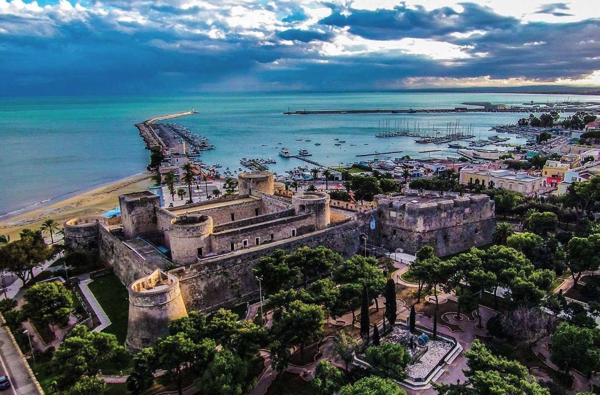

Cinque cose da fare a Manfredonia che non trovi su TripAdvisor
Il Castello Svevo-Angioino al tramonto, la Basilica paleocristiana di Siponto, il mercato del pesce all'alba, un aperitivo sul lungomare e il tramonto sul Golfo.
Leggi tutto →